古墳関連
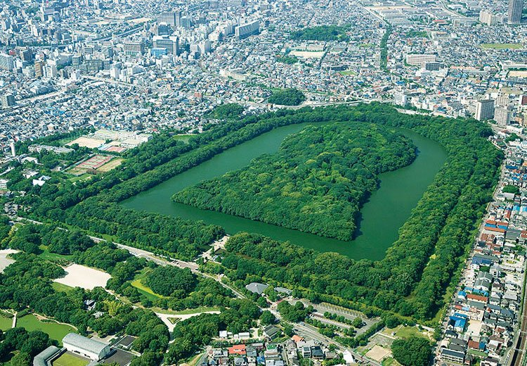
出展: https://otent-nankai.jp/category/spot/190913_nintoku_277
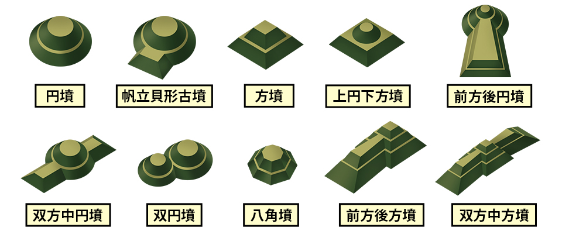
出展: https://www.touken-world.jp/tips/50131/
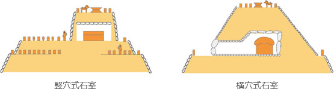
出展: https://www.geolab.jp/documents/science/science-095/
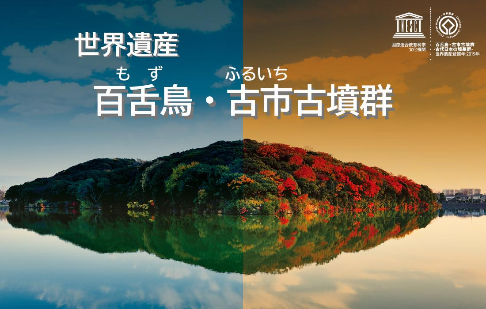
出展: https://www.city.sakai.lg.jp/kanko/rekishi/sei/index.html
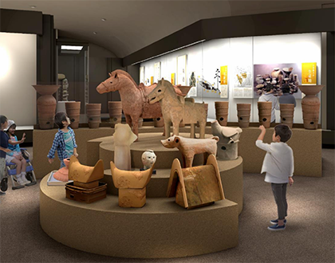
出展: http://www.sakai-journal.co.jp/348/04.htm
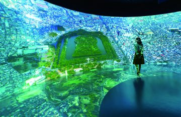
出展: https://osaka-info.jp/special/dc/event/detail24/
環濠関連
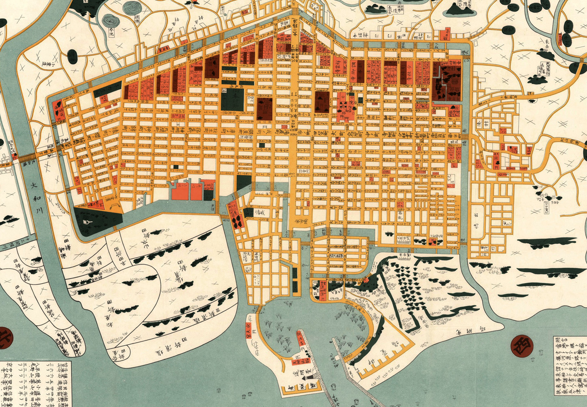
出展: https://www.atpress.ne.jp/releases/428371/img_428371_6.jpg
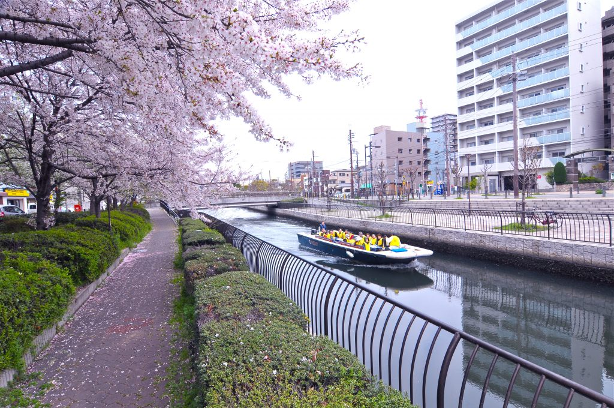
出展: https://sakai-film.jp/location/%E7%92%B0%E6%BF%A0%E3%82%AF%E3%83%AB%E3%83%BC%E3%82%BAsakai/
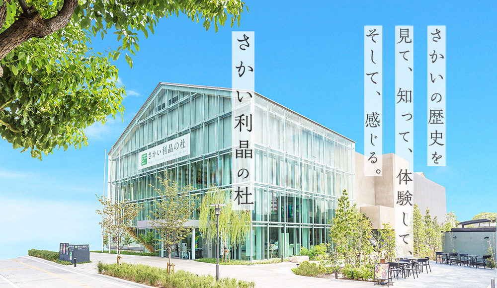
出展: https://www.sakai-rishonomori.com/
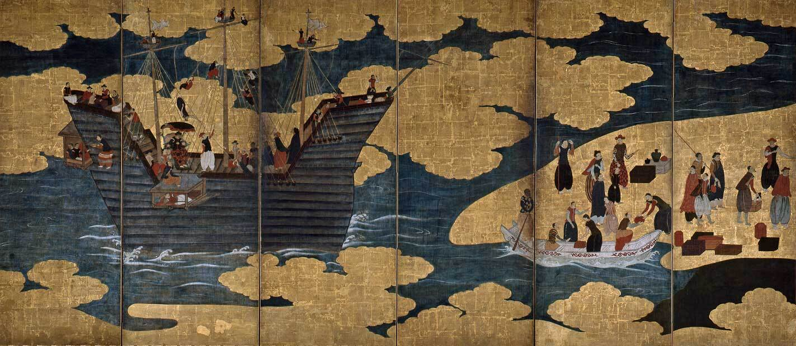
出展: https://www.sakai-tcb.or.jp/feature/detail/81
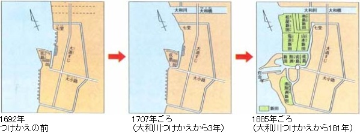
出展: https://www.city.sakai.lg.jp/kurashi/doro/doboku/kasensuiro/shoukai/73148720230712112228546.html
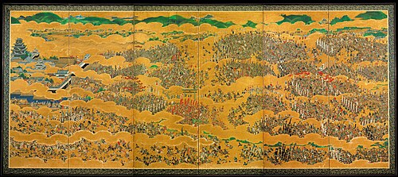
出展: https://ja.wikipedia.org/wiki/大坂の陣
鍛冶関連
 出展: https://prtimes.jp/story/detail/Qbpvy5C7JJx
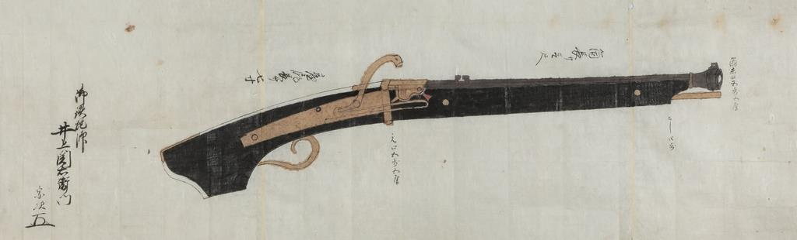
出展: https://www.sankei.com/article/20190419-UKT3ZDEPDNLMDAQIXNIPSE6WYE/
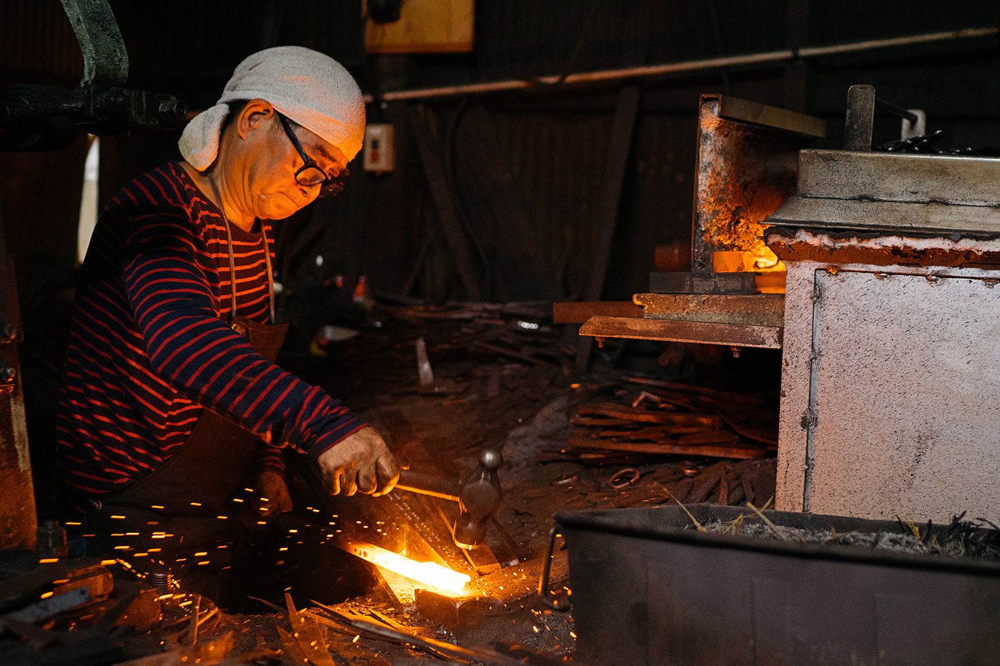
出展: https://www.sakai-tcb.or.jp/feature/detail/18
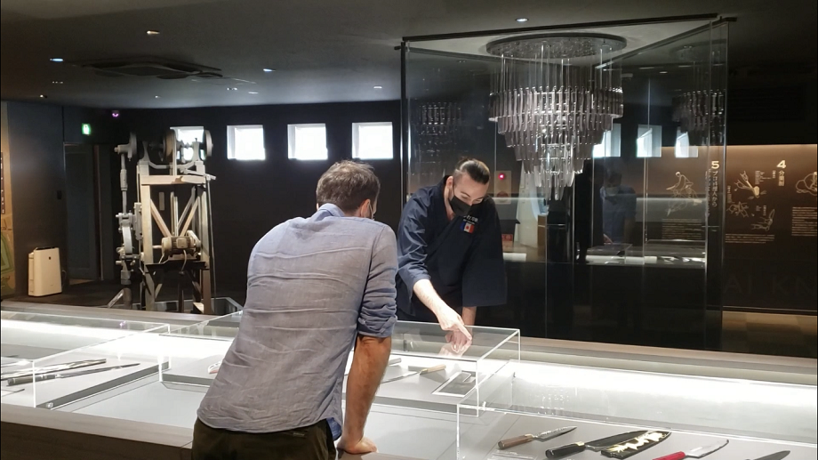
出展: https://www.sakai-tcb.or.jp/feature/detail/18
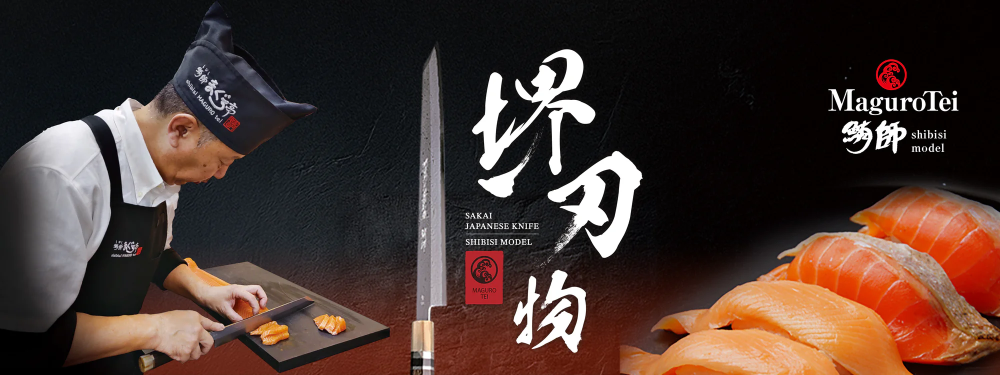
出展: https://maguro-tei.myshopify.com/ja
出展: https://prtimes.jp/story/detail/Qbpvy5C7JJx
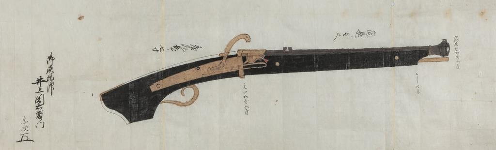
出展: https://www.sankei.com/article/20190419-UKT3ZDEPDNLMDAQIXNIPSE6WYE/
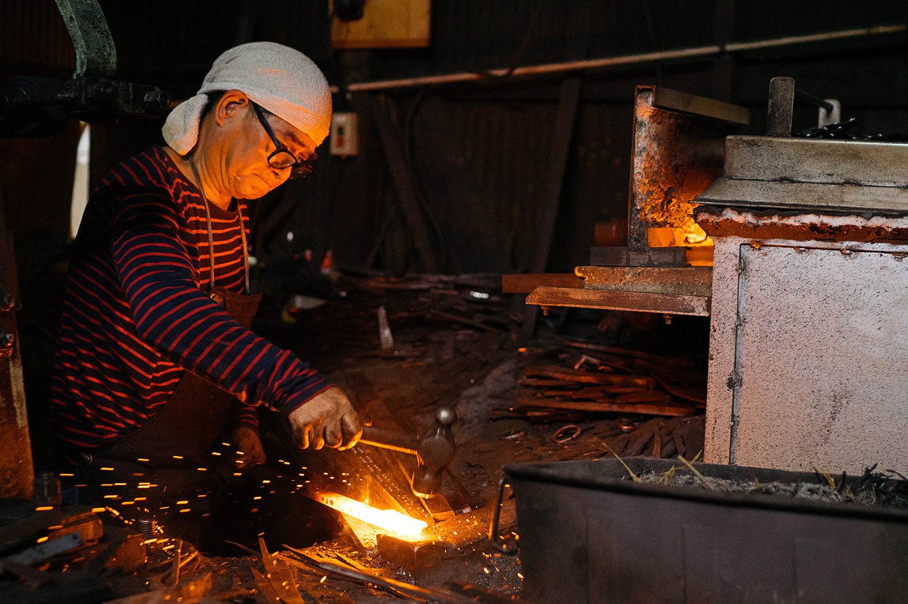
出展: https://www.sakai-tcb.or.jp/feature/detail/18
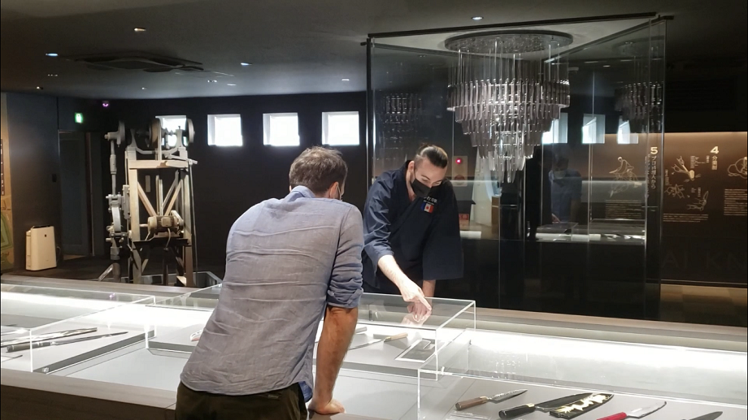
出展: https://www.sakai-tcb.or.jp/feature/detail/18
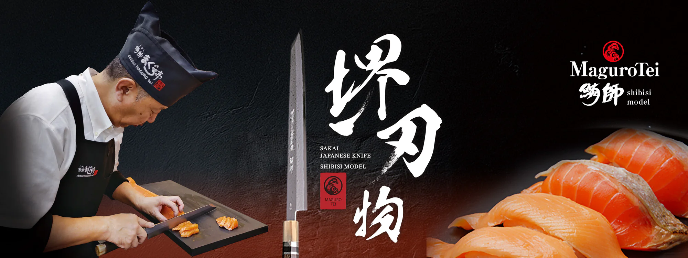
出展: https://maguro-tei.myshopify.com/ja